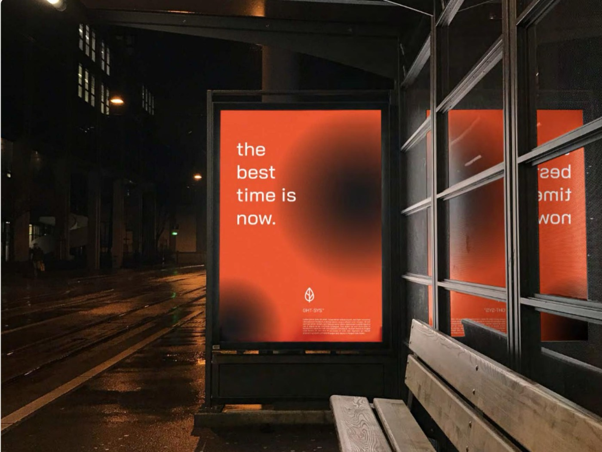
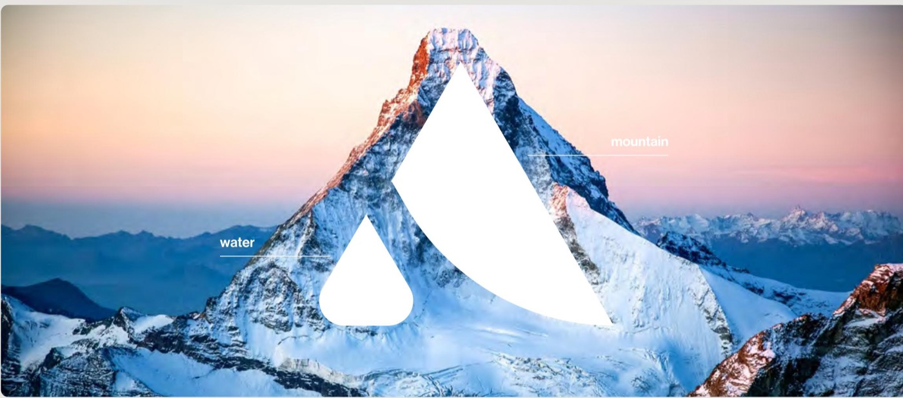
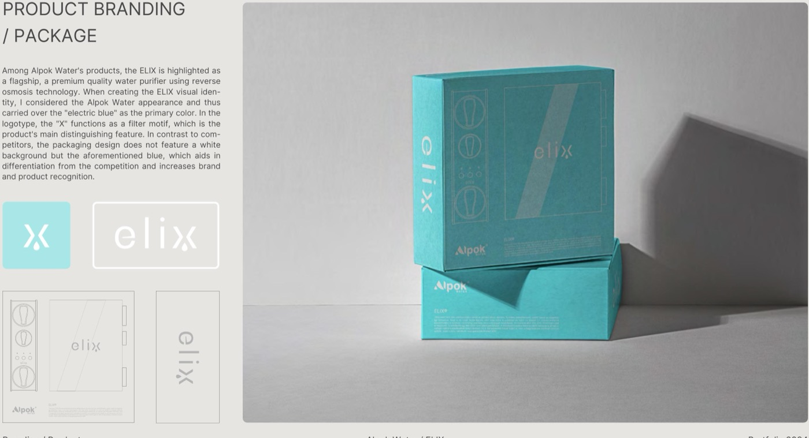
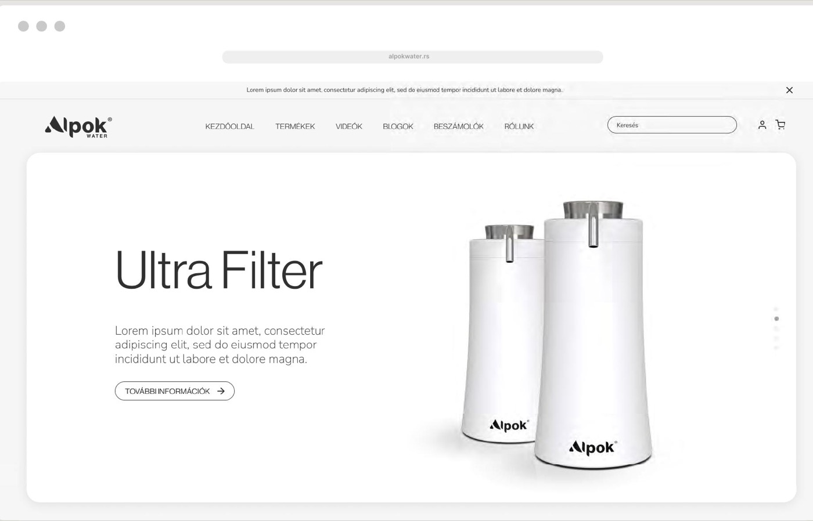
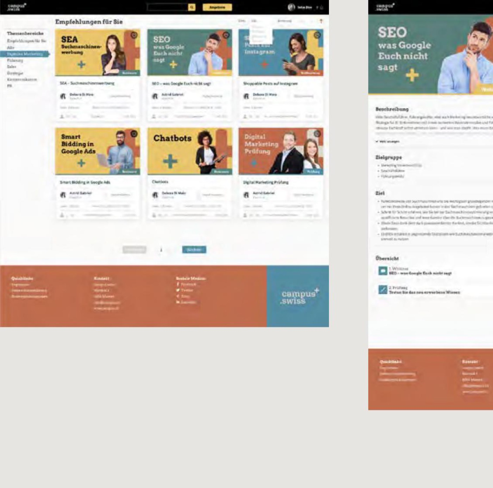

01
Identity and marks
Logotypes, identity systems, colour, typography, and the rules that hold them together.
Visual identity, packaging and interface design. Budapest, since 2018.
Identity and print design are home ground for me, but interface work has run alongside it from the start. Two sides of the same job.
01
Logotypes, identity systems, colour, typography, and the rules that hold them together.
02
Product ranges, boxes, labels, publications, posters. Prepared through to press.
03
Websites, apps and internal systems, designed alongside developers.
04
Custom letterforms and wordmarks when an off-the-shelf typeface will not do.
Visual identity, packaging and interface design since 2018.
Identity and campaign for an IT company
A company that builds and operates information technology and systems, and within a few years became involved internationally across most areas of IT development. The identity was made to support that growth: an anthracite base, two strong complementary colours, and a typeface suited to programming and printed circuit boards.

Identity, packaging and online store
A company operating across Europe that improves water quality at both residential and industrial levels, aiming to bring tap water to a level where nobody needs to reach for bottled mineral water. The mark holds a mountain and a drop of water in one form. On ELIX, the flagship reverse-osmosis purifier, the X of the logotype works as the filter itself, and the pack is blue rather than the competition's white so it separates on the shelf.



Interface design, learning platform
Login, marketplace, training data sheet and registration. The full flow of a learning platform, from the first click through to the order summary.

How I work
An identity is good when it stays recognisable in twenty different places, and awkward in none of them.
A mark is decided at its smallest size, not on the presentation slide.
Interface work at a software company and on a freelance basis.
Webinar platform: login, marketplace, speaker information, registration
Interface
Luxury watch brand, special landing pages
Web
Active tech brand, landing and subpages
Web
Book, merchandise and website for exhibitions
About
I am a graphic designer based in Budapest, specialising in visual identity, print and digital design. I earned my MA in Graphic Design from the Hungarian University of Fine Arts, and during my studies I was already working on real projects, in agency environments and on independent commissions alike.
Early on I took smaller personal projects, usually visual identities and the printed material that came with them. That is where I got to know designing for print and creating marks, and it remains my preferred ground. In my second year at university I joined a cosmetics company, where I developed the design of the product range in line with the identity and designed the packaging for new products.
Meanwhile a software development company brought me in as a UI designer. I learned Figma there and worked directly with developers for the first time, which is a perspective I still design with. I built interfaces for commercial, business optimisation and educational systems, for domestic and foreign companies alike.
I currently work as a Senior Graphic Designer at an international company with Hungarian roots, where beyond the usual design work I take part in the company's global visual presence.
Illustrator, Photoshop, InDesign, Figma, Glyphs.